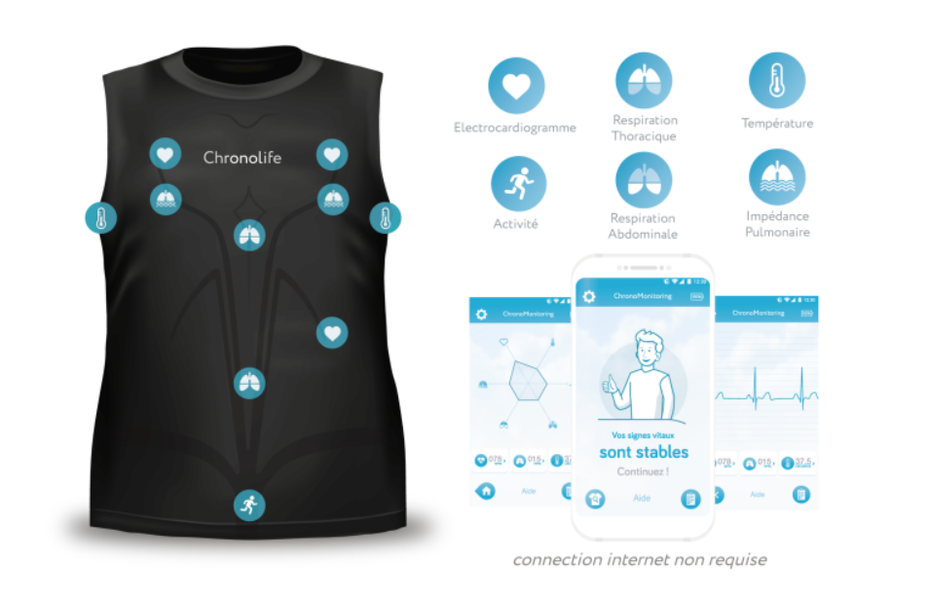

When I talk to developers around me, I rarely meet one who knows the Kivy framework.
So let's talk about it.
Kivy is a cross-platform Python GUI framework. It can run on Android, iOS, Linux, macOS, and Windows. It is easy to use and fast and licensed under the MIT license.
Advantages
The main advantages of Kivy are:
- KV language for describing the interface.
- Python and his batteries included. Imagine using one of the easy-to-use machine learning libraries available for Python.
- Python is maintainable and easy to read.
- Built for multi-touch.
- Compared to other mobile frameworks, the API is stable, and you don't waste your time running behind changes in the framework (Hello Flutter...).
- MIT license.
- Write a single codebase for deployment on many platforms.
Of course, being a cross-platform language means the UX is not native, and that's not always a problem. As a developer, I've built many mobile apps with Kivy, some with complex features that are easy to manage with Kivy, like:
- Background BLE communications with medical devices.
- Bluetooth 5 for upgrading firmware in nrf52 devices.
- A service recording GPS positions in the background for tracking runs and outdoor activities.
- Syncing files with a webdav nextcloud instance.
- Running a full machine learning engine in the background of a mobile device (thanks Python scipy and numpy).
- Accessing the Android API.
Example
A great example is an app I made years ago that gathers data from a Bluetooth medical device and use them to predict bad events for the patient. And machine learning runs locally on the user's mobile phone, data stay private.
